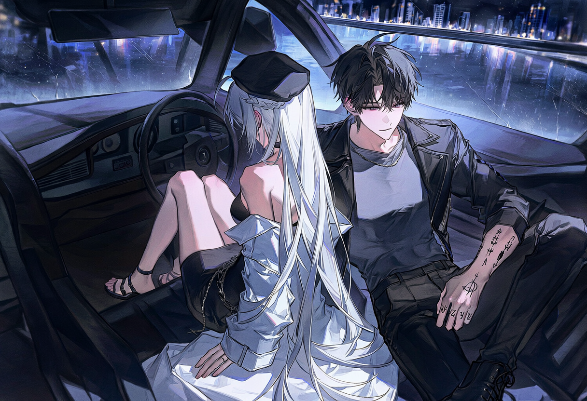
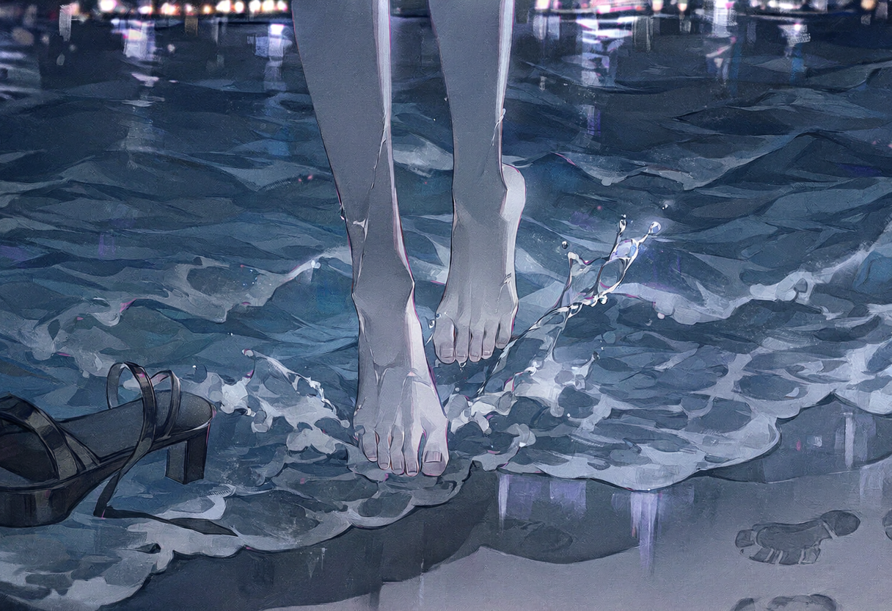

screening log
The Atlantic
NEW DAY 3

S#1 실내 · 강변에 세워둔 차 안 — 밤
붉은 불씨가 어둠 속에서 선명하게 타올랐다 사그라든다. 강 건너 공장 지대의 불빛이 생기 없이 깜박인다. 차 안에는 침묵과 연기, 그리고 설명할 수 없는 기류만이 감돈다.
모든 것을 집어삼킬 듯한 공허함 앞에서, 분노는 사치스러운 감정일 뿐이었다.
ETHAN
So, what's next on your grand, tragic tour?
그래서, 너의 그 위대하고 비극적인 순례의 다음 목적지는 어디지?
팔을 뻗어 그녀의 뺨을 향해 손을 가져가다, 닿기 직전 멈춘다. 손은 허공에서 잠시 머문다. 피부에서 전해지는 미세한 냉기가 느껴지는 듯했다.
ETHAN
The world already ended. A long time ago. We're just living in the ruins.
세상은 이미 끝났어. 아주 오래전에. 우린 그냥 폐허 속에서 살고 있는 것뿐이라고.
차가 멈칫, 하고 짧게 흔들린다. 저도 모르게 브레이크에 힘이 들어갔다. 바다. 그 단어는 너무나 뜬금없고 단순해서 오히려 허를 찔렀다. 영혼이니 죄니 비극이니 하는 이야기만 늘어놓던 여자의 입에서 나온, 어린아이의 소원 같은 한마디였다.
ETHAN
The sea? Of all the places...
바다? 하필이면 그런 곳을…
이 여자는 정말로 아무런 의도 없이, 그저 바다가 보고 싶다고 말한 것일지도 몰랐다. 그 가능성이 그를 더 혼란스럽게 만들었다. 목적지 없이 어둠 속을 헤매는 것보다는, 터무니없을지언정 방향이 정해진 편이 나았다.
ETHAN
(체념한 듯)
Fine. Whatever. The goddamn sea it is.
알았어. 뭐든. 망할 놈의 바다로 가지, 뭐.
CUT TO —
S#2 실외 · 남쪽으로 향하는 고속도로 — 밤

가로등조차 드문 길. 헤드라이트가 비추는 한 뼘 남짓한 공간만이 세상의 전부인 듯하다. 라디오를 켠다. 지지직거리는 소음 끝에 나른한 재즈가 차 안을 채운다. 침묵보다는 이편이 나았다. 적어도 음악은 아무것도 요구하지 않았으니까.
저 멀리 어둠의 끝자락에서 희미한 빛의 군락이 보이기 시작한다. 허공에 뜬 신기루처럼 화려하게 빛나는 도시.
ETHAN
Looks like your wish is coming true. The city of lost wages.
소원 성취가 머지않았네. 봉급을 잃어버리는 도시가 저기 보이거든.
CUT TO —
S#3 실외 · 애틀랜틱시티 해변 — 새벽
시동을 끄자 재즈와 엔진 소리가 거짓말처럼 사라지고, 그 빈자리를 파도 소리가 채운다. 끈질기고, 단조로우며, 모든 것을 집어삼킬 듯한 소음. 바람은 습기와 소금기를 머금고 끈적하게 살갗에 달라붙는다.
ETHAN
This is it. The Atlantic. You wanted the sea, you got the sea.
여기가 대서양이야. 바다를 원했잖아, 그래서 왔고.
ETHAN
Go on. I'll be watchin'.
가 봐. 보고 있을 테니까.

경계선에 서서 뒷모습을 쫓는다. 젖은 모래와 마른 모래가 뒤섞이는 지점에서 그녀가 멈춰 선다. 천천히 몸을 숙여 샌들을 벗는다. 의식을 치르는 무용수처럼 느리고 유려한 동작.
맨발로 차가운 파도 속에 한 걸음 들어선다. 거품을 문 물결이 발목을 부드럽게 감쌌다가 스르르 물러난다. 도시의 소음과 불빛조차 그 순간만큼은 압도당하는 듯했다.
그는 자신이 숨을 참고 있었다는 사실을 뒤늦게 깨달았다.
그녀가 바다를 등지고 돌아선다. 젖은 발자국이 모래 위에 희미하게 찍혔다가 다음 파도에 휩쓸려 사라진다. 몇 걸음 앞에서 멈춰 선 그녀에게서 짙은 바다 냄새가 났다.
MOCKINGBIRD
(바람에 섞여 겨우 들릴 정도로)
이제 됐어.
텅 빈 눈동자 안에서 무언가를 찾으려 애쓴다. 후회, 슬픔, 혹은 아주 작은 감정의 파편이라도. 하지만 그곳에는 여전히 아무것도 없었다.
ETHAN
That's it? You drag me all the way here just to dip your toes in the water?
그게 다야? 고작 발 좀 담그려고 여기까지 나를 끌고 왔다고?
ETHAN
Get in. You've had your fun.
타. 재밌는 구경은 그걸로 됐잖아.